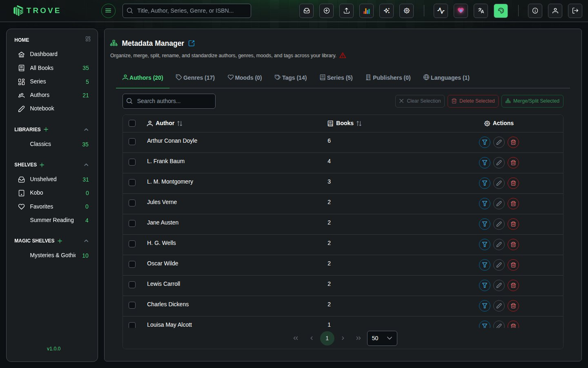
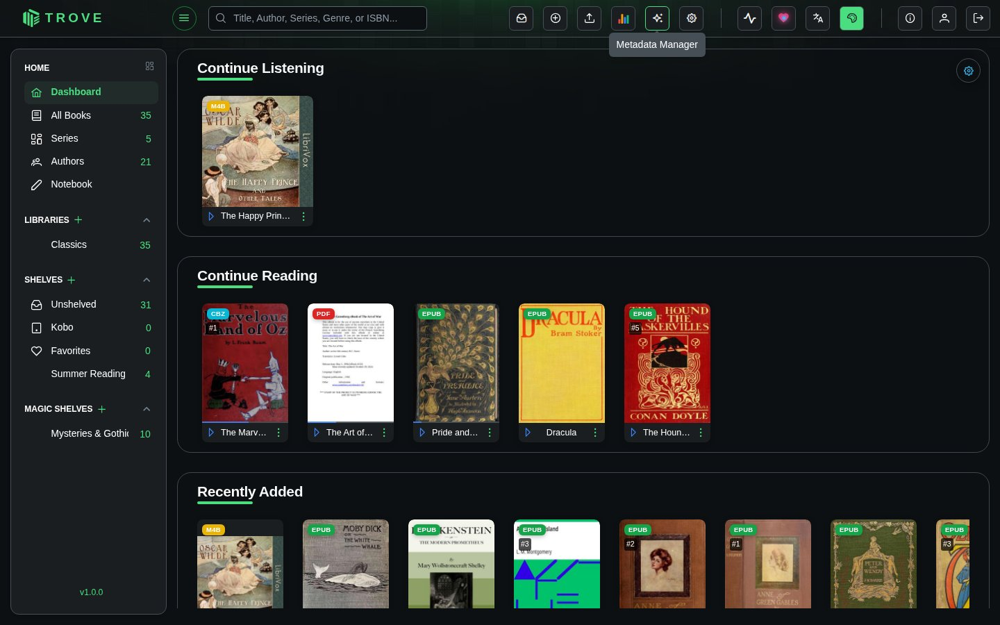
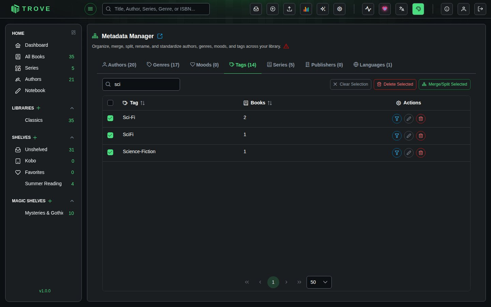
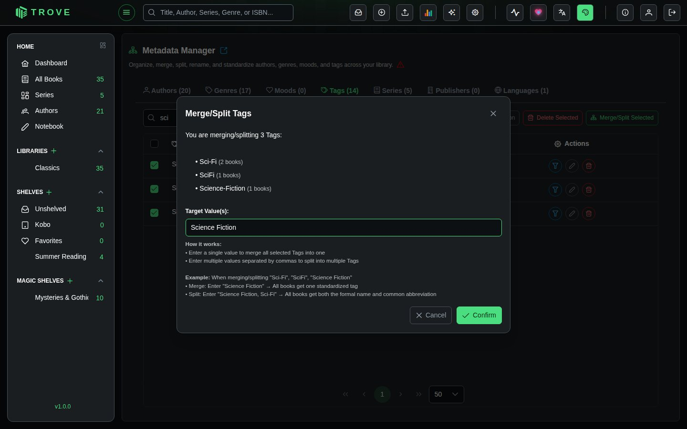
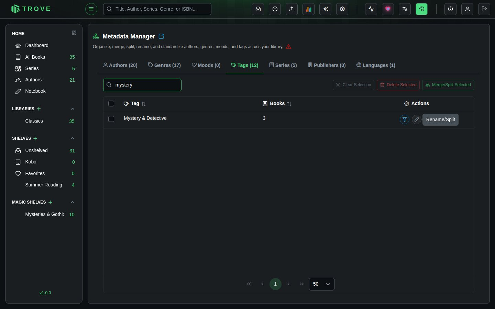
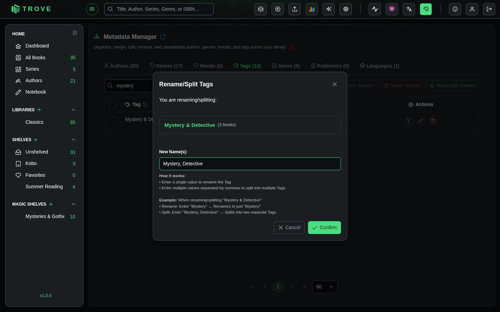
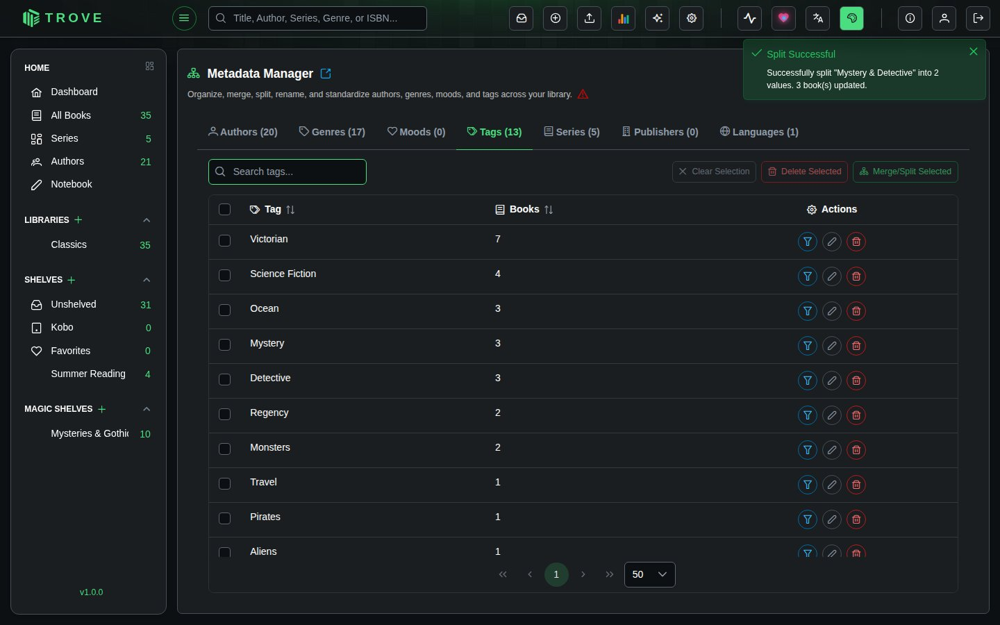
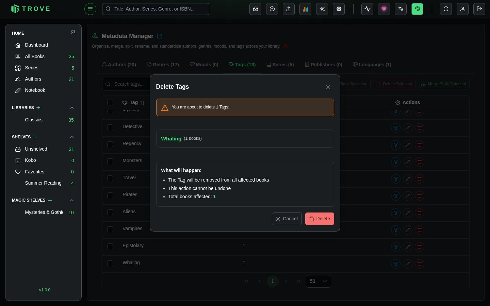

Metadata Manager
The Metadata Manager lets you clean up and standardize metadata across your entire library. Merge duplicates, rename entries, split combined values, and delete unwanted metadata in bulk.

Access it from Settings > Metadata Manager.

Metadata Categories
The manager has seven tabs, each showing all unique values and a count of how many books use each one:
| Tab | Type | Notes |
|---|---|---|
| Authors | Multi-value | Books can have multiple authors |
| Genres | Multi-value | Books can belong to multiple genres |
| Moods | Multi-value | Books can have multiple mood tags |
| Tags | Multi-value | Unlimited custom tags per book |
| Series | Single-value | Each book belongs to one series |
| Publishers | Single-value | One publisher per book |
| Languages | Single-value | One language per book |
The distinction between multi-value and single-value fields matters for merge and rename operations (see below).
Each tab has a search bar, sortable columns (by name or book count), and pagination. Click any metadata value to navigate to the filtered book view showing all books with that value.
Merging Metadata
Combine duplicate or similar entries into a standardized value. Useful for cleaning up variations like "Sci-Fi", "Science Fiction", and "SciFi" into a single entry.
- Select at least two items using the checkboxes
- Click Merge Selected
- Enter the target value


For multi-value fields (Authors, Genres, Moods, Tags), you can enter comma-separated values to give all affected books multiple tags. For example, merging "Mystery & Detective" into Mystery, Detective gives every affected book both tags.
For single-value fields (Series, Publisher, Language), only a single target value is allowed. All selected entries are standardized to that one value.
Examples
| Selected | Target | Result |
|---|---|---|
| "Sci-Fi", "Science Fiction", "SciFi" | Science Fiction | All books get "Science Fiction" |
| "En", "English", "en-US" | English | All books have language set to "English" |
| "Mystery & Detective" | Mystery, Detective | Books get both "Mystery" and "Detective" |
Renaming Metadata
Rename individual entries or split them into multiple values. Click the pencil icon next to any entry.



For multi-value fields, entering comma-separated values splits the entry. For example, renaming "Mystery & Detective" to Mystery, Detective gives affected books both tags.
For single-value fields, only a single new name is allowed.
Deleting Metadata
Remove metadata values from all books that have them. Click the trash icon on a single entry, or select multiple items and click Delete Selected.

Deletion removes the metadata from affected books. The books themselves remain in your library with all other metadata intact.
Select Similar
Click the Select Similar button (filter icon) on any entry to automatically select other entries with similar names. This uses substring matching in both directions, making it easy to find variations and duplicates quickly.
Tips
- Sort by book count to focus on high-impact entries first
- Use Select Similar to quickly find duplicate variations before merging
- Metadata is case-sensitive: "fiction" and "Fiction" are treated as separate entries
- Leading and trailing spaces matter: "Author " and "Author" are different
- Click any metadata value to see which books it applies to before making changes